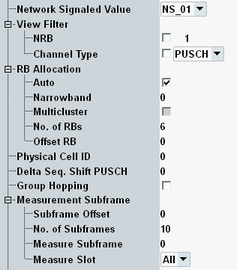

This section describes the following "Measurement Control" settings.

Adjust this value to the "network signaled value" used by the UE. The selected value has impacts on the spectrum emission mask limit check, see "Spectrum Emission Mask".
The available values depend on the configured carrier aggregation mode ("NS_xx" values or "CA_NS_xx" values).
In the standalone (SA) scenario, this parameter is controlled by the measurement. In the combined signal path (CSP) scenario, it is controlled by the signaling application.
Restricts the measurement to signal periods with certain properties. Periods that do not match the filter settings, do not contribute to the measurement results.
Specifies the number of allocated resource blocks (RB) in the measured slot. Slots with a different number of allocated blocks are rejected. Use this setting for signals with a varying number of allocated RBs, if you wish to restrict the measurement to a subset of slots with a specific number of RBs.
With carrier aggregation, the view filter is applied to the "Measurement Carrier".
The allowed values for this parameter are restricted by 3GPP TS 36.211. For details, see "Resources in Time and Frequency Domain".
Remote command:Allows you to measure only slots for which the detected channel type equals physical uplink shared channel (PUSCH) or only slots with channel type physical uplink control channel (PUCCH). The detected channel type is influenced by the parameters "Channel Type" and "PUCCH Format".
With carrier aggregation, the view filter is applied to the "Measurement Carrier".
Remote command:Configure the settings according to the resource block allocation of the measured signal.
With carrier aggregation, the settings apply to the "Measurement Carrier".
For background information, see "Resource Block Allocation".
If "Auto" is enabled, the RB configuration is detected automatically. The settings "Narrowband", "No. of RBs" and "Offset RB" are ignored.
Automatic detection is not possible for multi-cluster allocation.
Remote command:Select the narrowband used for eMTC.
For eMTC signals with narrowband hopping, ignore this setting and use the "Auto" mode.
Remote command:Specifies whether the UL signal uses multi-cluster allocation or not. Multi-cluster allocation is not allowed for eMTC.
In the standalone (SA) scenario, this parameter is controlled by the measurement. In the combined signal path (CSP) scenario, it is controlled by the signaling application.
"OFF" | All allocated RBs are grouped in a single contiguous cluster. Allocation type 0 is used (no resource block groups). |
"ON" | The allocated RBs are divided into two clusters. Within each cluster, the allocation is contiguous. Allocation type 1 is used (resource block groups). The view "RB Allocation Table" is not available. For inband emission results, the limit check is disabled. |
Number of allocated RBs in the measured slot and offset of the first allocated RB from the edge of the allocated transmission bandwidth.
For eMTC, the RBs are configured in the selected narrowband (maximum 6 RBs, offset within the narrowband).
Remote command:The settings are configurable per cluster.
In the standalone (SA) scenario, these parameters are controlled by the measurement. In the combined signal path (CSP) scenario, they are controlled by the signaling application.
Adjust this parameter to the physical cell ID used by the measured LTE signal. This setting is required to ensure that the R&S CMW can synchronize to the signal and perform channel estimation.
To configure the physical cell ID for carrier aggregation, see "Carrier Aggregation Settings".
In the standalone (SA) scenario, this parameter is controlled by the measurement. In the combined signal path (CSP) scenario, it is controlled by the signaling application.
Delta sequence shift value (Δss) used to calculate the sequence shift pattern for PUSCH from the sequence shift pattern for PUCCH (refer to "group hopping" in 3GPP TS 36.211). Adjust this value to the measured LTE signal to ensure that the R&S CMW can synchronize to the signal and perform channel estimation.
Remote command:Specifies whether group hopping is used or not (refer to "group hopping" in 3GPP TS 36.211). Set this parameter according to the measured LTE signal to ensure that the R&S CMW can synchronize to the signal and perform channel estimation.
Measurements with group hopping require a frame trigger signal.
In the standalone (SA) scenario, this parameter is controlled by the measurement. In the combined signal path (CSP) scenario, it is controlled by the signaling application.
- "Subframe Offset" specifies the start of the measured subframe range relative to the trigger event
- "No. of Subframes" specifies the length of the measured subframe range, i.e.:
– Number of subframes to be measured and displayed in the views "Power Monitor" and "RB Allocation Table" – Number of subframes to be evaluated for BLER measurements. Select a high value being a multiple of 10 to speed up BLER measurements and ensure that the number of scheduled subframes per radio frame can be evaluated correctly. - "Measure Subframe" selects one subframe of the measured subframe range containing the measured slots for all other results, e.g. modulation and spectrum results. For "Power Dynamics" measurements, the ON power is measured in this subframe.
- "Measure Slot" selects which slots of the "Measure Subframe" are measured: both slots, the first slot only (slot #0) or the second slot only (slot #1).
See also "Defining the Scope of the Measurement".
Remote command: